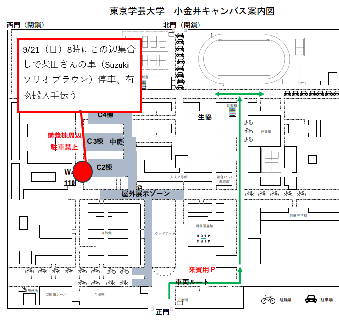
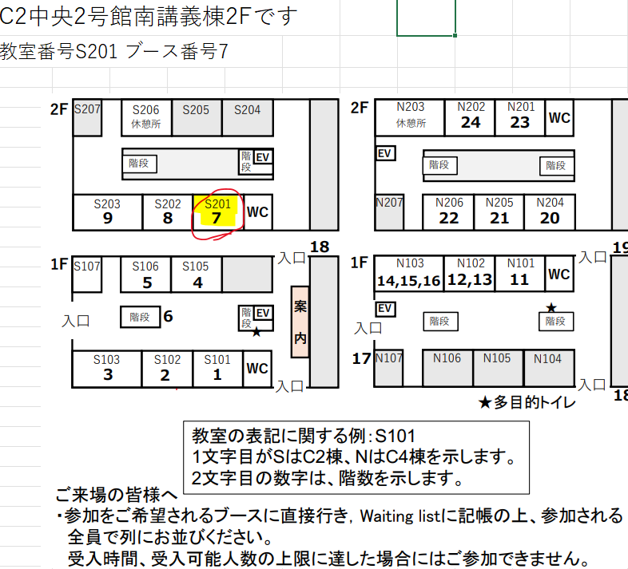

イベント概要
このセクションでは、イベントの最も重要な情報を一目で確認できます。開催日、主要な場所、そして準備のタスク配分を視覚的に把握し、全体のスケジュール感を掴むことができます。
役割分担
ここでは、各担当者の具体的な役割とスケジュールを確認できます。下のドロップダウンメニューから自分の名前を選択すると、担当するタスクのみが表示され、前日と当日の動きをスムーズに把握できます。
| 担当者名 |
9/20 (土) = 前日 |
9/21 (日) = 当日 |
当日係 |
重要事項
このセクションでは、食事、経費、備品、物流など、イベント運営に関わる重要な決定事項をまとめています。各項目をカード形式で確認し、当日の運営に必要な情報を漏れなくチェックしてください。
📋Waiting List
市原さんが印刷し、受付に設置
💻機材
Scratch: Raspberry Pi、ディスプレイセットを3つ用意
🚫ネットワーク
Wi-Fi利用、OSアップデートはしない
🚚物流
車両: 柴田さんのスズキ・ソリオ（ブラウン）
- 前日: はけで積み込み。
- 当日: 朝8時に当日参加者がC棟脇で搬入を手伝う。
会場アクセス
当日の集合場所とイベント会場の場所を地図で確認できます。特に朝の搬入集合場所は重要ですので、構内図をよく確認してください。会場図では、自分たちのブースの位置を把握しておきましょう。
構内図 (集合場所)

重要: 9/21(日) 朝8時
C棟脇（図の赤丸付近）に集合。柴田さんの車から荷物を搬入します。
会場図 (ブース位置)

ブース情報
C2棟 (S) 2階 S201教室、ブース番号は7です。